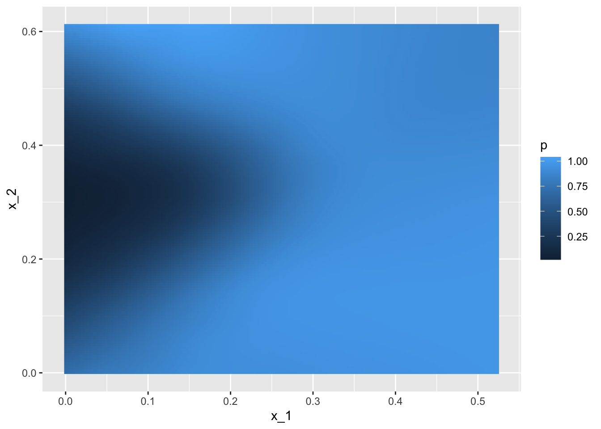

4 Section 3 - Linear Regression for Prediction, Smoothing, and Working with Matrices Overview
In the Linear Regression for Prediction, Smoothing, and Working with Matrices Overview section, you will learn why linear regression is a useful baseline approach but is often insufficiently flexible for more complex analyses, how to smooth noisy data, and how to use matrices for machine learning.
After completing this section, you will be able to:
- Use linear regression for prediction as a baseline approach.
- Use logistic regression for categorical data.
- Detect trends in noisy data using smoothing (also known as curve fitting or low pass filtering).
- Convert predictors to matrices and outcomes to vectors when all predictors are numeric (or can be converted to numerics in a meaningful way).
- Perform basic matrix algebra calculations.
This section has three parts: linear regression for prediction, smoothing, and working with matrices.
4.1 Linear Regression for Prediction
There is a link to the relevant section of the textbook: Linear regression for prediction
Key points
- Linear regression can be considered a machine learning algorithm. Although it can be too rigid to be useful, it works rather well for some challenges. It also serves as a baseline approach: if you can’t beat it with a more complex approach, you probably want to stick to linear regression.
Code
Note: the seed was not set before createDataPartition so your results may be different.
if(!require(HistData)) install.packages("HistData")## Loading required package: HistDatalibrary(HistData)
galton_heights <- GaltonFamilies %>%
filter(childNum == 1 & gender == "male") %>%
dplyr::select(father, childHeight) %>%
rename(son = childHeight)
y <- galton_heights$son
test_index <- createDataPartition(y, times = 1, p = 0.5, list = FALSE)
train_set <- galton_heights %>% slice(-test_index)
test_set <- galton_heights %>% slice(test_index)
avg <- mean(train_set$son)
avg## [1] 70.50114mean((avg - test_set$son)^2)## [1] 6.034931# fit linear regression model
fit <- lm(son ~ father, data = train_set)
fit$coef## (Intercept) father
## 34.8934373 0.5170499y_hat <- fit$coef[1] + fit$coef[2]*test_set$father
mean((y_hat - test_set$son)^2)## [1] 4.6326294.2 Predict Function
There is a link to the relevant section of the textbook: Predict function
Key points
- The
predict()function takes a fitted object from functions such aslm()orglm()and a data frame with the new predictors for which to predict. We can use predict like this:
y_hat <- predict(fit, test_set)predict()is a generic function in R that calls other functions depending on what kind of object it receives. To learn about the specifics, you can read the help files using code like this:
?predict.lm # or ?predict.glmCode
y_hat <- predict(fit, test_set)
mean((y_hat - test_set$son)^2)## [1] 4.632629# read help files
?predict.lm
?predict.glm4.3 Comprehension Check - Linear Regression
- Create a data set using the following code:
# set.seed(1) # if using R 3.5 or earlier
set.seed(1, sample.kind="Rounding") # if using R 3.6 or later## Warning in set.seed(1, sample.kind = "Rounding"): non-uniform 'Rounding' sampler usedn <- 100
Sigma <- 9*matrix(c(1.0, 0.5, 0.5, 1.0), 2, 2)
dat <- MASS::mvrnorm(n = 100, c(69, 69), Sigma) %>%
data.frame() %>% setNames(c("x", "y"))We will build 100 linear models using the data above and calculate the mean and standard deviation of the combined models. First, set the seed to 1 again (make sure to use sample.kind="Rounding" if your R is version 3.6 or later). Then, within a replicate() loop, (1) partition the dataset into test and training sets with p = 0.5 and using dat$y to generate your indices, (2) train a linear model predicting y from x, (3) generate predictions on the test set, and (4) calculate the RMSE of that model. Then, report the mean and standard deviation (SD) of the RMSEs from all 100 models.
Report all answers to at least 3 significant digits.
# set.seed(1) # if using R 3.5 or earlier
set.seed(1, sample.kind="Rounding") # if using R 3.6 or later## Warning in set.seed(1, sample.kind = "Rounding"): non-uniform 'Rounding' sampler usedrmse <- replicate(100, {
test_index <- createDataPartition(dat$y, times = 1, p = 0.5, list = FALSE)
train_set <- dat %>% slice(-test_index)
test_set <- dat %>% slice(test_index)
fit <- lm(y ~ x, data = train_set)
y_hat <- predict(fit, newdata = test_set)
sqrt(mean((y_hat-test_set$y)^2))
})
mean(rmse)## [1] 2.488661sd(rmse)## [1] 0.1243952- Now we will repeat the exercise above but using larger datasets. Write a function that takes a size
n, then (1) builds a dataset using the code provided at the top of Q1 but withnobservations instead of 100 and without theset.seed(1), (2) runs thereplicate()loop that you wrote to answer Q1, which builds 100 linear models and returns a vector of RMSEs, and (3) calculates the mean and standard deviation of the 100 RMSEs.
Set the seed to 1 (if using R 3.6 or later, use the argument sample.kind="Rounding") and then use sapply() or map() to apply your new function to n <- c(100, 500, 1000, 5000, 10000).
Hint: You only need to set the seed once before running your function; do not set a seed within your function. Also be sure to use sapply() or map() as you will get different answers running the simulations individually due to setting the seed.
# set.seed(1) # if R 3.5 or earlier
set.seed(1, sample.kind="Rounding") # if R 3.6 or later## Warning in set.seed(1, sample.kind = "Rounding"): non-uniform 'Rounding' sampler usedn <- c(100, 500, 1000, 5000, 10000)
res <- sapply(n, function(n){
Sigma <- 9*matrix(c(1.0, 0.5, 0.5, 1.0), 2, 2)
dat <- MASS::mvrnorm(n, c(69, 69), Sigma) %>%
data.frame() %>% setNames(c("x", "y"))
rmse <- replicate(100, {
test_index <- createDataPartition(dat$y, times = 1, p = 0.5, list = FALSE)
train_set <- dat %>% slice(-test_index)
test_set <- dat %>% slice(test_index)
fit <- lm(y ~ x, data = train_set)
y_hat <- predict(fit, newdata = test_set)
sqrt(mean((y_hat-test_set$y)^2))
})
c(avg = mean(rmse), sd = sd(rmse))
})
res## [,1] [,2] [,3] [,4] [,5]
## avg 2.4977540 2.72095125 2.55554451 2.62482800 2.61844227
## sd 0.1180821 0.08002108 0.04560258 0.02309673 0.01689205- What happens to the RMSE as the size of the dataset becomes larger?
- A. On average, the RMSE does not change much as n gets larger, but the variability of the RMSE decreases.
- B. Because of the law of large numbers the RMSE decreases; more data means more precise estimates.
- C. n = 10000 is not sufficiently large. To see a decrease in the RMSE we would need to make it larger.
- D. The RMSE is not a random variable.
- Now repeat the exercise from Q1, this time making the correlation between
xandylarger, as in the following code:
# set.seed(1) # if using R 3.5 or earlier
set.seed(1, sample.kind="Rounding") # if using R 3.6 or later## Warning in set.seed(1, sample.kind = "Rounding"): non-uniform 'Rounding' sampler usedn <- 100
Sigma <- 9*matrix(c(1.0, 0.95, 0.95, 1.0), 2, 2)
dat <- MASS::mvrnorm(n = 100, c(69, 69), Sigma) %>%
data.frame() %>% setNames(c("x", "y"))Note what happens to RMSE - set the seed to 1 as before.
# set.seed(1) # if using R 3.5 or earlier
set.seed(1, sample.kind="Rounding") # if using R 3.6 or later## Warning in set.seed(1, sample.kind = "Rounding"): non-uniform 'Rounding' sampler usedrmse <- replicate(100, {
test_index <- createDataPartition(dat$y, times = 1, p = 0.5, list = FALSE)
train_set <- dat %>% slice(-test_index)
test_set <- dat %>% slice(test_index)
fit <- lm(y ~ x, data = train_set)
y_hat <- predict(fit, newdata = test_set)
sqrt(mean((y_hat-test_set$y)^2))
})
mean(rmse)## [1] 0.9099808sd(rmse)## [1] 0.06244347- Which of the following best explains why the RMSE in question 4 is so much lower than the RMSE in question 1?
- A. It is just luck. If we do it again, it will be larger.
- B. The central limit theorem tells us that the RMSE is normal.
- C. When we increase the correlation between x and y, x has more predictive power and thus provides a better estimate of y.
- D. These are both examples of regression so the RMSE has to be the same.
- Create a data set using the following code.
# set.seed(1) # if using R 3.5 or earlier
set.seed(1, sample.kind="Rounding") # if using R 3.6 or later## Warning in set.seed(1, sample.kind = "Rounding"): non-uniform 'Rounding' sampler usedSigma <- matrix(c(1.0, 0.75, 0.75, 0.75, 1.0, 0.25, 0.75, 0.25, 1.0), 3, 3)
dat <- MASS::mvrnorm(n = 100, c(0, 0, 0), Sigma) %>%
data.frame() %>% setNames(c("y", "x_1", "x_2"))Note that y is correlated with both x_1 and x_2 but the two predictors are independent of each other, as seen by cor(dat).
Set the seed to 1, then use the caret package to partition into test and training sets with p = 0.5. Compare the RMSE when using just x_1, just x_2 and both x_1 and x_2. Train a single linear model for each (not 100 like in the previous questions).
Which of the three models performs the best (has the lowest RMSE)?
# set.seed(1) # if using R 3.5 or earlier
set.seed(1, sample.kind="Rounding") # if using R 3.6 or later## Warning in set.seed(1, sample.kind = "Rounding"): non-uniform 'Rounding' sampler usedtest_index <- createDataPartition(dat$y, times = 1, p = 0.5, list = FALSE)
train_set <- dat %>% slice(-test_index)
test_set <- dat %>% slice(test_index)
fit <- lm(y ~ x_1, data = train_set)
y_hat <- predict(fit, newdata = test_set)
sqrt(mean((y_hat-test_set$y)^2))## [1] 0.600666fit <- lm(y ~ x_2, data = train_set)
y_hat <- predict(fit, newdata = test_set)
sqrt(mean((y_hat-test_set$y)^2))## [1] 0.630699fit <- lm(y ~ x_1 + x_2, data = train_set)
y_hat <- predict(fit, newdata = test_set)
sqrt(mean((y_hat-test_set$y)^2))## [1] 0.3070962-
A.
x_1 -
B.
x_2 -
C.
x_1andx_2
- Report the lowest RMSE of the three models tested in Q6.
fit <- lm(y ~ x_1 + x_2, data = train_set)
y_hat <- predict(fit, newdata = test_set)
sqrt(mean((y_hat-test_set$y)^2))## [1] 0.3070962- Repeat the exercise from Q6 but now create an example in which
x_1andx_2are highly correlated.
# set.seed(1) # if using R 3.5 or earlier
set.seed(1, sample.kind="Rounding") # if using R 3.6 or later## Warning in set.seed(1, sample.kind = "Rounding"): non-uniform 'Rounding' sampler usedSigma <- matrix(c(1.0, 0.75, 0.75, 0.75, 1.0, 0.95, 0.75, 0.95, 1.0), 3, 3)
dat <- MASS::mvrnorm(n = 100, c(0, 0, 0), Sigma) %>%
data.frame() %>% setNames(c("y", "x_1", "x_2"))Set the seed to 1, then use the caret package to partition into a test and training set of equal size. Compare the RMSE when using just x_1, just x_2, and both x_1 and x_2.
Compare the results from Q6 and Q8. What can you conclude?
# set.seed(1) # if using R 3.5 or earlier
set.seed(1, sample.kind="Rounding") # if using R 3.6 or later## Warning in set.seed(1, sample.kind = "Rounding"): non-uniform 'Rounding' sampler usedtest_index <- createDataPartition(dat$y, times = 1, p = 0.5, list = FALSE)
train_set <- dat %>% slice(-test_index)
test_set <- dat %>% slice(test_index)
fit <- lm(y ~ x_1, data = train_set)
y_hat <- predict(fit, newdata = test_set)
sqrt(mean((y_hat-test_set$y)^2))## [1] 0.6592608fit <- lm(y ~ x_2, data = train_set)
y_hat <- predict(fit, newdata = test_set)
sqrt(mean((y_hat-test_set$y)^2))## [1] 0.640081fit <- lm(y ~ x_1 + x_2, data = train_set)
y_hat <- predict(fit, newdata = test_set)
sqrt(mean((y_hat-test_set$y)^2))## [1] 0.6597865- A. Unless we include all predictors we have no predictive power.
- B. Adding extra predictors improves RMSE regardless of whether the added predictors are correlated with other predictors or not.
- C. Adding extra predictors results in over fitting.
- D. Adding extra predictors can improve RMSE substantially, but not when the added predictors are highly correlated with other predictors.
4.4 Regression for a Categorical Outcome
There is a link to the relevant section of the textbook: Regression for a categorical outcome
Key points
- The regression approach can be extended to categorical data. For example, we can try regression to estimate the conditional probability:
\(p(x)=Pr(Y=1|X=x)=\beta_{0}+\beta_{1}x\)
- Once we have estimates \(\beta_0\) and \(\beta_1\), we can obtain an actual prediction \(p(x)\). Then we can define a specific decision rule to form a prediction.
Code
data("heights")
y <- heights$height
set.seed(2) #if you are using R 3.5 or earlier
set.seed(2, sample.kind = "Rounding") #if you are using R 3.6 or later## Warning in set.seed(2, sample.kind = "Rounding"): non-uniform 'Rounding' sampler usedtest_index <- createDataPartition(y, times = 1, p = 0.5, list = FALSE)
train_set <- heights %>% slice(-test_index)
test_set <- heights %>% slice(test_index)
train_set %>%
filter(round(height)==66) %>%
summarize(y_hat = mean(sex=="Female"))## y_hat
## 1 0.2424242heights %>%
mutate(x = round(height)) %>%
group_by(x) %>%
filter(n() >= 10) %>%
summarize(prop = mean(sex == "Female")) %>%
ggplot(aes(x, prop)) +
geom_point()## `summarise()` ungrouping output (override with `.groups` argument)lm_fit <- mutate(train_set, y = as.numeric(sex == "Female")) %>% lm(y ~ height, data = .)
p_hat <- predict(lm_fit, test_set)
y_hat <- ifelse(p_hat > 0.5, "Female", "Male") %>% factor()
confusionMatrix(y_hat, test_set$sex)$overall["Accuracy"]## Accuracy
## 0.78517114.5 Logistic Regression
There is a link to the relevant section of the textbook: Logistic regression
Key points
- Logistic regression is an extension of linear regression that assures that the estimate of conditional probability \(Pr(Y=1|X=x)\) is between 0 and 1. This approach makes use of the logistic transformation:
\(g(p)=log\frac{p}{1-p}\)
- With logistic regression, we model the conditional probability directly with:
\(g\{Pr(Y=1|X=x)\}=\beta_{0}+\beta_{1}x\)
- Note that with this model, we can no longer use least squares. Instead we compute the maximum likelihood estimate (MLE).
- In R, we can fit the logistic regression model with the function
glm()(generalized linear models). If we want to compute the conditional probabilities, we wanttype="response"since the default is to return the logistic transformed values.
Code
heights %>%
mutate(x = round(height)) %>%
group_by(x) %>%
filter(n() >= 10) %>%
summarize(prop = mean(sex == "Female")) %>%
ggplot(aes(x, prop)) +
geom_point() +
geom_abline(intercept = lm_fit$coef[1], slope = lm_fit$coef[2])## `summarise()` ungrouping output (override with `.groups` argument)range(p_hat)## [1] -0.397868 1.123309# fit logistic regression model
glm_fit <- train_set %>%
mutate(y = as.numeric(sex == "Female")) %>%
glm(y ~ height, data=., family = "binomial")
p_hat_logit <- predict(glm_fit, newdata = test_set, type = "response")
tmp <- heights %>%
mutate(x = round(height)) %>%
group_by(x) %>%
filter(n() >= 10) %>%
summarize(prop = mean(sex == "Female")) ## `summarise()` ungrouping output (override with `.groups` argument)logistic_curve <- data.frame(x = seq(min(tmp$x), max(tmp$x))) %>%
mutate(p_hat = plogis(glm_fit$coef[1] + glm_fit$coef[2]*x))
tmp %>%
ggplot(aes(x, prop)) +
geom_point() +
geom_line(data = logistic_curve, mapping = aes(x, p_hat), lty = 2)y_hat_logit <- ifelse(p_hat_logit > 0.5, "Female", "Male") %>% factor
confusionMatrix(y_hat_logit, test_set$sex)$overall[["Accuracy"]]## [1] 0.79847914.6 Case Study: 2 or 7
There is a link to the relevant section of the textbook: Case study: 2 or 7
Key points
- In this case study we apply logistic regression to classify whether a digit is two or seven. We are interested in estimating a conditional probability that depends on two variables:
\(g\{p(x_{1},x_{2}\}=g\{Pr(Y=1|X_{1}=x_{1}, X_{2}=x_{2})\} = \beta_{0}+\beta_{1}x_{1}+\beta_{2}x_{2}\)
- Through this case, we know that logistic regression forces our estimates to be a plane and our boundary to be a line. This implies that a logistic regression approach has no chance of capturing the non-linear nature of the true \(p(x_{1}, x_{2})\). Therefore, we need other more flexible methods that permit other shapes.
Code
mnist <- read_mnist()
is <- mnist_27$index_train[c(which.min(mnist_27$train$x_1), which.max(mnist_27$train$x_1))]
titles <- c("smallest","largest")
tmp <- lapply(1:2, function(i){
expand.grid(Row=1:28, Column=1:28) %>%
mutate(label=titles[i],
value = mnist$train$images[is[i],])
})
tmp <- Reduce(rbind, tmp)
tmp %>% ggplot(aes(Row, Column, fill=value)) +
geom_raster() +
scale_y_reverse() +
scale_fill_gradient(low="white", high="black") +
facet_grid(.~label) +
geom_vline(xintercept = 14.5) +
geom_hline(yintercept = 14.5)data("mnist_27")
mnist_27$train %>% ggplot(aes(x_1, x_2, color = y)) + geom_point()is <- mnist_27$index_train[c(which.min(mnist_27$train$x_2), which.max(mnist_27$train$x_2))]
titles <- c("smallest","largest")
tmp <- lapply(1:2, function(i){
expand.grid(Row=1:28, Column=1:28) %>%
mutate(label=titles[i],
value = mnist$train$images[is[i],])
})
tmp <- Reduce(rbind, tmp)
tmp %>% ggplot(aes(Row, Column, fill=value)) +
geom_raster() +
scale_y_reverse() +
scale_fill_gradient(low="white", high="black") +
facet_grid(.~label) +
geom_vline(xintercept = 14.5) +
geom_hline(yintercept = 14.5)fit_glm <- glm(y ~ x_1 + x_2, data=mnist_27$train, family = "binomial")
p_hat_glm <- predict(fit_glm, mnist_27$test)
y_hat_glm <- factor(ifelse(p_hat_glm > 0.5, 7, 2))
confusionMatrix(data = y_hat_glm, reference = mnist_27$test$y)$overall["Accuracy"]## Accuracy
## 0.76mnist_27$true_p %>% ggplot(aes(x_1, x_2, fill=p)) +
geom_raster()
mnist_27$true_p %>% ggplot(aes(x_1, x_2, z=p, fill=p)) +
geom_raster() +
scale_fill_gradientn(colors=c("#F8766D","white","#00BFC4")) +
stat_contour(breaks=c(0.5), color="black") p_hat <- predict(fit_glm, newdata = mnist_27$true_p)
mnist_27$true_p %>%
mutate(p_hat = p_hat) %>%
ggplot(aes(x_1, x_2, z=p_hat, fill=p_hat)) +
geom_raster() +
scale_fill_gradientn(colors=c("#F8766D","white","#00BFC4")) +
stat_contour(breaks=c(0.5),color="black") p_hat <- predict(fit_glm, newdata = mnist_27$true_p)
mnist_27$true_p %>%
mutate(p_hat = p_hat) %>%
ggplot() +
stat_contour(aes(x_1, x_2, z=p_hat), breaks=c(0.5), color="black") +
geom_point(mapping = aes(x_1, x_2, color=y), data = mnist_27$test)4.7 Comprehension Check - Logistic Regression
- Define a dataset using the following code:
# set.seed(2) #if you are using R 3.5 or earlier
set.seed(2, sample.kind="Rounding") #if you are using R 3.6 or later## Warning in set.seed(2, sample.kind = "Rounding"): non-uniform 'Rounding' sampler usedmake_data <- function(n = 1000, p = 0.5,
mu_0 = 0, mu_1 = 2,
sigma_0 = 1, sigma_1 = 1){
y <- rbinom(n, 1, p)
f_0 <- rnorm(n, mu_0, sigma_0)
f_1 <- rnorm(n, mu_1, sigma_1)
x <- ifelse(y == 1, f_1, f_0)
test_index <- createDataPartition(y, times = 1, p = 0.5, list = FALSE)
list(train = data.frame(x = x, y = as.factor(y)) %>% slice(-test_index),
test = data.frame(x = x, y = as.factor(y)) %>% slice(test_index))
}
dat <- make_data()Note that we have defined a variable x that is predictive of a binary outcome y:
dat$train %>% ggplot(aes(x, color = y)) + geom_density().
Set the seed to 1, then use the make_data() function defined above to generate 25 different datasets with mu_1 <- seq(0, 3, len=25). Perform logistic regression on each of the 25 different datasets (predict 1 if p > 0.5) and plot accuracy (res in the figures) vs mu_1 (delta in the figures).
Which is the correct plot?
set.seed(1) #if you are using R 3.5 or earlier
set.seed(1, sample.kind="Rounding") #if you are using R 3.6 or later## Warning in set.seed(1, sample.kind = "Rounding"): non-uniform 'Rounding' sampler useddelta <- seq(0, 3, len = 25)
res <- sapply(delta, function(d){
dat <- make_data(mu_1 = d)
fit_glm <- dat$train %>% glm(y ~ x, family = "binomial", data = .)
y_hat_glm <- ifelse(predict(fit_glm, dat$test) > 0.5, 1, 0) %>% factor(levels = c(0, 1))
mean(y_hat_glm == dat$test$y)
})
qplot(delta, res)- A.

- B.
- C.

- D.
4.8 Introduction to Smoothing
There is a link to the relevant section of the textbook: Smoothing
Key points
- Smoothing is a very powerful technique used all across data analysis. It is designed to detect trends in the presence of noisy data in cases in which the shape of the trend is unknown.
- The concepts behind smoothing techniques are extremely useful in machine learning because conditional expectations/probabilities can be thought of as trends of unknown shapes that we need to estimate in the presence of uncertainty.
Code
data("polls_2008")
qplot(day, margin, data = polls_2008)4.9 Bin Smoothing and Kernels
There is a link to the relevant sections of the textbook: Bin smoothing and Kernels
Key points
- The general idea of smoothing is to group data points into strata in which the value of \(f(x)\) can be assumed to be constant. We can make this assumption because we think \(f(x)\) changes slowly and, as a result, \(f(x)\) is almost constant in small windows of time.
- This assumption implies that a good estimate for \(f(x)\) is the average of the \(Y_{i}\) values in the window. The estimate is:
\(\hat{f}(x_{0})=\frac{1}{N_{0}}\sum_{i\in{A_{0}}}Y_{i}\)
- In smoothing, we call the size of the interval \(|x-x_{0}|\) satisfying the particular condition the window size, bandwidth or span.
Code
# bin smoothers
span <- 7
fit <- with(polls_2008,ksmooth(day, margin, x.points = day, kernel="box", bandwidth =span))
polls_2008 %>% mutate(smooth = fit$y) %>%
ggplot(aes(day, margin)) +
geom_point(size = 3, alpha = .5, color = "grey") +
geom_line(aes(day, smooth), color="red")# kernel
span <- 7
fit <- with(polls_2008, ksmooth(day, margin, x.points = day, kernel="normal", bandwidth = span))
polls_2008 %>% mutate(smooth = fit$y) %>%
ggplot(aes(day, margin)) +
geom_point(size = 3, alpha = .5, color = "grey") +
geom_line(aes(day, smooth), color="red")4.10 Local Weighted Regression (loess)
There is a link to the relevant section of the textbook: Local weighted regression
Key points
- A limitation of the bin smoothing approach is that we need small windows for the approximately constant assumptions to hold which may lead to imprecise estimates of \(f(x)\). Local weighted regression (loess) permits us to consider larger window sizes.
- One important difference between loess and bin smoother is that we assume the smooth function is locally linear in a window instead of constant.
- The result of loess is a smoother fit than bin smoothing because we use larger sample sizes to estimate our local parameters.
Code
polls_2008 %>% ggplot(aes(day, margin)) +
geom_point() +
geom_smooth(color="red", span = 0.15, method = "loess", method.args = list(degree=1))## `geom_smooth()` using formula 'y ~ x'
4.11 Comprehension Check - Smoothing
- In the Wrangling course of this series, PH125.6x, we used the following code to obtain mortality counts for Puerto Rico for 2015-2018:
if(!require(purrr)) install.packages("purrr")
if(!require(pdftools)) install.packages("pdftools")## Loading required package: pdftools## Using poppler version 0.73.0library(tidyverse)
library(lubridate)
library(purrr)
library(pdftools)
fn <- system.file("extdata", "RD-Mortality-Report_2015-18-180531.pdf", package="dslabs")
dat <- map_df(str_split(pdf_text(fn), "\n"), function(s){
s <- str_trim(s)
header_index <- str_which(s, "2015")[1]
tmp <- str_split(s[header_index], "\\s+", simplify = TRUE)
month <- tmp[1]
header <- tmp[-1]
tail_index <- str_which(s, "Total")
n <- str_count(s, "\\d+")
out <- c(1:header_index, which(n==1), which(n>=28), tail_index:length(s))
s[-out] %>%
str_remove_all("[^\\d\\s]") %>%
str_trim() %>%
str_split_fixed("\\s+", n = 6) %>%
.[,1:5] %>%
as_data_frame() %>%
setNames(c("day", header)) %>%
mutate(month = month,
day = as.numeric(day)) %>%
gather(year, deaths, -c(day, month)) %>%
mutate(deaths = as.numeric(deaths))
}) %>%
mutate(month = recode(month, "JAN" = 1, "FEB" = 2, "MAR" = 3, "APR" = 4, "MAY" = 5, "JUN" = 6,
"JUL" = 7, "AGO" = 8, "SEP" = 9, "OCT" = 10, "NOV" = 11, "DEC" = 12)) %>%
mutate(date = make_date(year, month, day)) %>%
dplyr::filter(date <= "2018-05-01")## Warning: `as_data_frame()` is deprecated as of tibble 2.0.0.
## Please use `as_tibble()` instead.
## The signature and semantics have changed, see `?as_tibble`.
## This warning is displayed once every 8 hours.
## Call `lifecycle::last_warnings()` to see where this warning was generated.## Warning: The `x` argument of `as_tibble.matrix()` must have unique column names if `.name_repair` is omitted as of tibble 2.0.0.
## Using compatibility `.name_repair`.
## This warning is displayed once every 8 hours.
## Call `lifecycle::last_warnings()` to see where this warning was generated.Use the loess() function to obtain a smooth estimate of the expected number of deaths as a function of date. Plot this resulting smooth function. Make the span about two months long.
Which of the following plots is correct?
span <- 60 / as.numeric(diff(range(dat$date)))
fit <- dat %>% mutate(x = as.numeric(date)) %>% loess(deaths ~ x, data = ., span = span, degree = 1)
dat %>% mutate(smooth = predict(fit, as.numeric(date))) %>%
ggplot() +
geom_point(aes(date, deaths)) +
geom_line(aes(date, smooth), lwd = 2, col = "red")## Warning: Removed 1 rows containing missing values (geom_point).- A.
- B.

- C.
- D.

- Work with the same data as in Q1 to plot smooth estimates against day of the year, all on the same plot, but with different colors for each year.
Which code produces the desired plot?
dat %>%
mutate(smooth = predict(fit, as.numeric(date)), day = yday(date), year = as.character(year(date))) %>%
ggplot(aes(day, smooth, col = year)) +
geom_line(lwd = 2)- A.
dat %>%
mutate(smooth = predict(fit), day = yday(date), year = as.character(year(date))) %>%
ggplot(aes(day, smooth, col = year)) +
geom_line(lwd = 2)- B.
dat %>%
mutate(smooth = predict(fit, as.numeric(date)), day = mday(date), year = as.character(year(date))) %>%
ggplot(aes(day, smooth, col = year)) +
geom_line(lwd = 2)- C.
dat %>%
mutate(smooth = predict(fit, as.numeric(date)), day = yday(date), year = as.character(year(date))) %>%
ggplot(aes(day, smooth)) +
geom_line(lwd = 2)- D.
dat %>%
mutate(smooth = predict(fit, as.numeric(date)), day = yday(date), year = as.character(year(date))) %>%
ggplot(aes(day, smooth, col = year)) +
geom_line(lwd = 2)- Suppose we want to predict 2s and 7s in the
mnist_27dataset with just the second covariate. Can we do this? On first inspection it appears the data does not have much predictive power.
In fact, if we fit a regular logistic regression the coefficient for x_2 is not significant!
This can be seen using this code:
if(!require(broom)) install.packages("broom")## Loading required package: broomlibrary(broom)
mnist_27$train %>% glm(y ~ x_2, family = "binomial", data = .) %>% tidy()## # A tibble: 2 x 5
## term estimate std.error statistic p.value
## <chr> <dbl> <dbl> <dbl> <dbl>
## 1 (Intercept) -0.0907 0.247 -0.368 0.713
## 2 x_2 0.685 0.827 0.829 0.407Plotting a scatterplot here is not useful since y is binary:
qplot(x_2, y, data = mnist_27$train)Fit a loess line to the data above and plot the results. What do you observe?
mnist_27$train %>%
mutate(y = ifelse(y=="7", 1, 0)) %>%
ggplot(aes(x_2, y)) +
geom_smooth(method = "loess")## `geom_smooth()` using formula 'y ~ x'- A. There is no predictive power and the conditional probability is linear.
- B. There is no predictive power and the conditional probability is non-linear.
- C. There is predictive power and the conditional probability is linear.
- D. There is predictive power and the conditional probability is non-linear.
4.12 Matrices
There is a link to the relevant section of the textbook: Matrices
Key points
- The main reason for using matrices is that certain mathematical operations needed to develop efficient code can be performed using techniques from a branch of mathematics called linear algebra.
- Linear algebra and matrix notation are key elements of the language used in academic papers describing machine learning techniques.
Code
if(!exists("mnist")) mnist <- read_mnist()
class(mnist$train$images)## [1] "matrix" "array"x <- mnist$train$images[1:1000,]
y <- mnist$train$labels[1:1000]4.13 Matrix Notation
There is a link to the relevant section of the textbook: Matrix notation
Key points
- In matrix algebra, we have three main types of objects: scalars, vectors, and matrices.
- Scalar: \(\alpha=1\)
- Vector: \(X_{1} = \left(\begin{matrix} x_{1,1} \\ \vdots \\ x_{N,1} \\ \end{matrix}\right)\)
- Matrix: \(X = [X_{1}X_{2}] = \left(\begin{matrix} x_{1,1} & x_{1,2} \\ \vdots & \vdots \\ x_{N,1} & x_{N,2} \\ \end{matrix}\right)\)
- In R, we can extract the dimension of a matrix with the function
dim(). We can convert a vector into a matrix using the functionas.matrix().
Code
length(x[,1])## [1] 1000x_1 <- 1:5
x_2 <- 6:10
cbind(x_1, x_2)## x_1 x_2
## [1,] 1 6
## [2,] 2 7
## [3,] 3 8
## [4,] 4 9
## [5,] 5 10dim(x)## [1] 1000 784dim(x_1)## NULLdim(as.matrix(x_1))## [1] 5 1dim(x)## [1] 1000 7844.14 Converting a Vector to a Matrix
There is a link to the relevant section of the textbook: Converting a vector to a matrix
Key points
- In R, we can convert a vector into a matrix with the
matrix()function. The matrix is filled in by column, but we can fill by row by using thebyrowargument. The functiont()can be used to directly transpose a matrix. - Note that the matrix function recycles values in the vector without warning if the product of columns and rows does not match the length of the vector.
Code
my_vector <- 1:15
# fill the matrix by column
mat <- matrix(my_vector, 5, 3)
mat## [,1] [,2] [,3]
## [1,] 1 6 11
## [2,] 2 7 12
## [3,] 3 8 13
## [4,] 4 9 14
## [5,] 5 10 15# fill by row
mat_t <- matrix(my_vector, 3, 5, byrow = TRUE)
mat_t## [,1] [,2] [,3] [,4] [,5]
## [1,] 1 2 3 4 5
## [2,] 6 7 8 9 10
## [3,] 11 12 13 14 15identical(t(mat), mat_t)## [1] TRUEmatrix(my_vector, 5, 5)## [,1] [,2] [,3] [,4] [,5]
## [1,] 1 6 11 1 6
## [2,] 2 7 12 2 7
## [3,] 3 8 13 3 8
## [4,] 4 9 14 4 9
## [5,] 5 10 15 5 10grid <- matrix(x[3,], 28, 28)
image(1:28, 1:28, grid)# flip the image back
image(1:28, 1:28, grid[, 28:1])4.15 Row and Column Summaries and Apply
There is a link to the relevant section of the textbook: Row and column summaries
Key points
- The function
rowSums()computes the sum of each row. - The function
rowMeans()computes the average of each row. - We can compute the column sums and averages using the functions
colSums()andcolMeans(). - The matrixStats package adds functions that performs operations on each row or column very efficiently, including the functions
rowSds()andcolSds(). - The
apply()function lets you apply any function to a matrix. The first argument is the matrix, the second is the dimension (1 for rows, 2 for columns), and the third is the function.
Code
sums <- rowSums(x)
avg <- rowMeans(x)
data_frame(labels = as.factor(y), row_averages = avg) %>%
qplot(labels, row_averages, data = ., geom = "boxplot")## Warning: `data_frame()` is deprecated as of tibble 1.1.0.
## Please use `tibble()` instead.
## This warning is displayed once every 8 hours.
## Call `lifecycle::last_warnings()` to see where this warning was generated.avgs <- apply(x, 1, mean)
sds <- apply(x, 2, sd)4.16 Filtering Columns Based on Summaries
There is a link to the relevant section of the textbook: Filtering columns based on summaries
Key points
- The operations used to extract columns:
x[,c(351,352)]. - The operations used to extract rows:
x[c(2,3),]. - We can also use logical indexes to determine which columns or rows to keep:
new_x <- x[ ,colSds(x) > 60]. - Important note: if you select only one column or only one row, the result is no longer a matrix but a vector. We can preserve the matrix class by using the argument
drop=FALSE.
Code
if(!require(matrixStats)) install.packages("matrixStats")## Loading required package: matrixStats##
## Attaching package: 'matrixStats'## The following object is masked from 'package:dplyr':
##
## countlibrary(matrixStats)
sds <- colSds(x)
qplot(sds, bins = "30", color = I("black"))image(1:28, 1:28, matrix(sds, 28, 28)[, 28:1])#extract columns and rows
x[ ,c(351,352)]## [,1] [,2]
## [1,] 70 0
## [2,] 0 0
## [3,] 0 0
## [4,] 205 253
## [5,] 8 78
## [6,] 0 0
## [7,] 253 253
## [8,] 91 212
## [9,] 254 143
## [10,] 0 0
## [11,] 254 254
## [12,] 78 79
## [13,] 254 248
## [14,] 0 114
## [15,] 254 109
## [16,] 0 0
## [17,] 0 0
## [18,] 80 223
## [19,] 0 0
## [20,] 8 43
## [21,] 109 109
## [22,] 96 204
## [23,] 0 0
## [24,] 142 255
## [25,] 32 254
## [26,] 250 253
## [27,] 0 0
## [28,] 253 253
## [29,] 0 0
## [30,] 2 0
## [31,] 253 253
## [32,] 253 253
## [33,] 0 0
## [34,] 228 216
## [35,] 225 0
## [36,] 141 86
## [37,] 107 0
## [38,] 0 0
## [39,] 0 15
## [40,] 0 0
## [41,] 253 253
## [42,] 232 233
## [43,] 0 182
## [44,] 71 173
## [45,] 253 203
## [46,] 44 199
## [47,] 0 154
## [48,] 0 0
## [49,] 169 254
## [50,] 252 176
## [51,] 254 254
## [52,] 0 0
## [53,] 0 0
## [54,] 24 242
## [55,] 71 122
## [56,] 0 186
## [57,] 0 0
## [58,] 0 0
## [59,] 111 189
## [60,] 229 254
## [61,] 0 0
## [62,] 0 227
## [63,] 0 0
## [64,] 253 251
## [65,] 0 0
## [66,] 216 151
## [67,] 128 128
## [68,] 254 254
## [69,] 0 0
## [70,] 29 0
## [71,] 253 122
## [72,] 69 0
## [73,] 254 204
## [74,] 17 179
## [75,] 253 252
## [76,] 182 15
## [77,] 254 254
## [78,] 251 253
## [79,] 173 253
## [80,] 10 0
## [81,] 252 253
## [82,] 0 0
## [83,] 0 0
## [84,] 0 128
## [85,] 0 0
## [86,] 253 253
## [87,] 253 253
## [88,] 21 52
## [89,] 0 0
## [90,] 0 0
## [91,] 0 0
## [92,] 53 53
## [93,] 0 0
## [94,] 70 236
## [95,] 38 0
## [96,] 0 0
## [97,] 0 26
## [98,] 38 38
## [99,] 253 240
## [100,] 69 253
## [101,] 0 0
## [102,] 66 0
## [103,] 254 95
## [104,] 0 0
## [105,] 251 0
## [106,] 253 253
## [107,] 0 0
## [108,] 191 255
## [109,] 0 0
## [110,] 163 8
## [111,] 78 253
## [112,] 55 139
## [113,] 252 253
## [114,] 252 252
## [115,] 0 0
## [116,] 0 0
## [117,] 0 15
## [118,] 253 253
## [119,] 0 0
## [120,] 14 0
## [121,] 0 0
## [122,] 0 0
## [123,] 0 150
## [124,] 0 0
## [125,] 253 233
## [126,] 254 178
## [127,] 0 0
## [128,] 61 1
## [129,] 253 253
## [130,] 192 252
## [131,] 254 247
## [132,] 0 5
## [133,] 253 253
## [134,] 141 240
## [135,] 253 251
## [136,] 252 252
## [137,] 254 179
## [138,] 255 255
## [139,] 244 253
## [140,] 0 0
## [141,] 0 0
## [142,] 131 44
## [143,] 0 0
## [144,] 162 255
## [145,] 72 142
## [146,] 0 0
## [147,] 0 34
## [148,] 0 0
## [149,] 0 0
## [150,] 252 252
## [151,] 221 254
## [152,] 0 0
## [153,] 232 254
## [154,] 5 89
## [155,] 253 213
## [156,] 0 36
## [157,] 0 0
## [158,] 179 242
## [159,] 50 50
## [160,] 0 90
## [161,] 254 254
## [162,] 229 254
## [163,] 0 0
## [164,] 76 243
## [165,] 0 0
## [166,] 63 167
## [167,] 0 0
## [168,] 0 0
## [169,] 253 252
## [170,] 105 4
## [171,] 37 168
## [172,] 69 168
## [173,] 255 152
## [174,] 170 0
## [175,] 252 253
## [176,] 185 8
## [177,] 254 253
## [178,] 251 253
## [179,] 0 0
## [180,] 59 106
## [181,] 0 178
## [182,] 0 0
## [183,] 176 253
## [184,] 0 64
## [185,] 253 226
## [186,] 0 0
## [187,] 0 0
## [188,] 254 254
## [189,] 0 0
## [190,] 252 252
## [191,] 167 254
## [192,] 0 0
## [193,] 0 0
## [194,] 32 32
## [195,] 0 0
## [196,] 148 149
## [197,] 0 0
## [198,] 250 225
## [199,] 104 252
## [200,] 0 11
## [201,] 253 169
## [202,] 157 252
## [203,] 100 247
## [204,] 162 216
## [205,] 0 0
## [206,] 253 251
## [207,] 0 0
## [208,] 0 0
## [209,] 253 253
## [210,] 0 0
## [211,] 0 0
## [212,] 253 254
## [213,] 199 253
## [214,] 0 20
## [215,] 0 0
## [216,] 253 253
## [217,] 0 0
## [218,] 0 0
## [219,] 106 239
## [220,] 181 84
## [221,] 0 0
## [222,] 0 31
## [223,] 152 244
## [224,] 0 0
## [225,] 0 61
## [226,] 253 227
## [227,] 0 136
## [228,] 0 0
## [229,] 0 0
## [230,] 0 0
## [231,] 0 0
## [232,] 253 251
## [233,] 0 0
## [234,] 0 0
## [235,] 0 2
## [236,] 253 253
## [237,] 0 0
## [238,] 0 0
## [239,] 0 0
## [240,] 98 88
## [241,] 253 252
## [242,] 0 0
## [243,] 254 254
## [244,] 0 0
## [245,] 0 169
## [246,] 255 255
## [247,] 0 0
## [248,] 0 2
## [249,] 254 252
## [250,] 0 0
## [251,] 0 1
## [252,] 253 253
## [253,] 253 252
## [254,] 0 0
## [255,] 254 254
## [256,] 253 253
## [257,] 253 171
## [258,] 0 0
## [259,] 0 0
## [260,] 254 231
## [261,] 0 0
## [262,] 0 0
## [263,] 0 0
## [264,] 0 0
## [265,] 0 0
## [266,] 236 62
## [267,] 77 0
## [268,] 0 90
## [269,] 0 93
## [270,] 253 253
## [271,] 251 57
## [272,] 0 0
## [273,] 125 168
## [274,] 127 127
## [275,] 232 8
## [276,] 0 0
## [277,] 191 254
## [278,] 0 0
## [279,] 245 254
## [280,] 0 128
## [281,] 0 51
## [282,] 253 255
## [283,] 0 0
## [284,] 0 0
## [285,] 253 253
## [286,] 0 0
## [287,] 253 253
## [288,] 254 251
## [289,] 0 0
## [290,] 0 0
## [291,] 252 253
## [292,] 253 253
## [293,] 2 45
## [294,] 0 0
## [295,] 0 0
## [296,] 133 160
## [297,] 0 0
## [298,] 0 0
## [299,] 253 253
## [300,] 0 155
## [301,] 42 235
## [302,] 0 0
## [303,] 0 0
## [304,] 0 0
## [305,] 29 29
## [306,] 0 0
## [307,] 100 176
## [308,] 0 0
## [309,] 0 0
## [310,] 232 253
## [311,] 235 254
## [312,] 0 0
## [313,] 183 102
## [314,] 0 35
## [315,] 0 0
## [316,] 243 253
## [317,] 255 255
## [318,] 0 0
## [319,] 241 224
## [320,] 0 5
## [321,] 0 0
## [322,] 230 253
## [323,] 0 0
## [324,] 0 0
## [325,] 0 0
## [326,] 0 0
## [327,] 0 0
## [328,] 253 253
## [329,] 45 0
## [330,] 0 0
## [331,] 70 70
## [332,] 0 0
## [333,] 0 0
## [334,] 184 184
## [335,] 0 183
## [336,] 211 86
## [337,] 0 0
## [338,] 0 0
## [339,] 0 0
## [340,] 0 0
## [341,] 0 64
## [342,] 253 255
## [343,] 132 152
## [344,] 252 241
## [345,] 0 0
## [346,] 158 254
## [347,] 8 134
## [348,] 0 0
## [349,] 205 254
## [350,] 0 0
## [351,] 0 3
## [352,] 180 253
## [353,] 253 207
## [354,] 0 0
## [355,] 0 102
## [356,] 254 254
## [357,] 253 253
## [358,] 211 253
## [359,] 254 95
## [360,] 0 0
## [361,] 253 253
## [362,] 160 252
## [363,] 0 0
## [364,] 0 96
## [365,] 0 0
## [366,] 0 0
## [367,] 253 217
## [368,] 0 0
## [369,] 254 254
## [370,] 0 0
## [371,] 253 253
## [372,] 0 0
## [373,] 0 43
## [374,] 0 0
## [375,] 121 252
## [376,] 0 0
## [377,] 0 0
## [378,] 0 0
## [379,] 0 0
## [380,] 0 3
## [381,] 0 0
## [382,] 0 0
## [383,] 254 84
## [384,] 0 0
## [385,] 0 56
## [386,] 0 52
## [387,] 252 240
## [388,] 0 0
## [389,] 0 0
## [390,] 0 0
## [391,] 38 233
## [392,] 197 173
## [393,] 53 232
## [394,] 64 64
## [395,] 181 0
## [396,] 0 0
## [397,] 0 0
## [398,] 207 252
## [399,] 253 158
## [400,] 27 0
## [401,] 0 0
## [402,] 0 0
## [403,] 0 0
## [404,] 105 0
## [405,] 253 253
## [406,] 93 239
## [407,] 253 58
## [408,] 42 27
## [409,] 254 195
## [410,] 0 0
## [411,] 229 253
## [412,] 0 0
## [413,] 0 100
## [414,] 0 0
## [415,] 0 70
## [416,] 0 0
## [417,] 253 251
## [418,] 58 0
## [419,] 7 221
## [420,] 0 45
## [421,] 252 253
## [422,] 0 0
## [423,] 0 77
## [424,] 0 0
## [425,] 253 253
## [426,] 23 29
## [427,] 252 252
## [428,] 0 0
## [429,] 135 246
## [430,] 0 0
## [431,] 0 0
## [432,] 0 0
## [433,] 0 0
## [434,] 253 253
## [435,] 0 0
## [436,] 0 0
## [437,] 0 0
## [438,] 40 8
## [439,] 0 34
## [440,] 254 254
## [441,] 0 0
## [442,] 0 47
## [443,] 0 0
## [444,] 99 253
## [445,] 222 246
## [446,] 252 209
## [447,] 0 0
## [448,] 172 253
## [449,] 12 161
## [450,] 0 0
## [451,] 251 180
## [452,] 0 0
## [453,] 254 253
## [454,] 0 0
## [455,] 254 223
## [456,] 237 252
## [457,] 252 252
## [458,] 0 0
## [459,] 0 0
## [460,] 49 159
## [461,] 0 0
## [462,] 0 0
## [463,] 0 0
## [464,] 0 0
## [465,] 0 0
## [466,] 0 0
## [467,] 98 254
## [468,] 0 0
## [469,] 0 0
## [470,] 0 0
## [471,] 0 0
## [472,] 51 51
## [473,] 154 250
## [474,] 0 0
## [475,] 0 0
## [476,] 211 253
## [477,] 0 0
## [478,] 0 0
## [479,] 114 253
## [480,] 254 253
## [481,] 0 0
## [482,] 0 0
## [483,] 0 0
## [484,] 0 0
## [485,] 253 132
## [486,] 0 0
## [487,] 67 0
## [488,] 0 9
## [489,] 254 255
## [490,] 0 0
## [491,] 253 250
## [492,] 0 255
## [493,] 252 250
## [494,] 0 0
## [495,] 0 0
## [496,] 253 253
## [497,] 202 203
## [498,] 0 0
## [499,] 0 0
## [500,] 130 76
## [ reached getOption("max.print") -- omitted 500 rows ]x[c(2,3),]## [,1] [,2] [,3] [,4] [,5] [,6] [,7] [,8] [,9] [,10] [,11] [,12] [,13] [,14] [,15] [,16] [,17] [,18] [,19] [,20] [,21] [,22] [,23] [,24] [,25] [,26] [,27] [,28] [,29] [,30] [,31]
## [1,] 0 0 0 0 0 0 0 0 0 0 0 0 0 0 0 0 0 0 0 0 0 0 0 0 0 0 0 0 0 0 0
## [,32] [,33] [,34] [,35] [,36] [,37] [,38] [,39] [,40] [,41] [,42] [,43] [,44] [,45] [,46] [,47] [,48] [,49] [,50] [,51] [,52] [,53] [,54] [,55] [,56] [,57] [,58] [,59] [,60]
## [1,] 0 0 0 0 0 0 0 0 0 0 0 0 0 0 0 0 0 0 0 0 0 0 0 0 0 0 0 0 0
## [,61] [,62] [,63] [,64] [,65] [,66] [,67] [,68] [,69] [,70] [,71] [,72] [,73] [,74] [,75] [,76] [,77] [,78] [,79] [,80] [,81] [,82] [,83] [,84] [,85] [,86] [,87] [,88] [,89]
## [1,] 0 0 0 0 0 0 0 0 0 0 0 0 0 0 0 0 0 0 0 0 0 0 0 0 0 0 0 0 0
## [,90] [,91] [,92] [,93] [,94] [,95] [,96] [,97] [,98] [,99] [,100] [,101] [,102] [,103] [,104] [,105] [,106] [,107] [,108] [,109] [,110] [,111] [,112] [,113] [,114] [,115]
## [1,] 0 0 0 0 0 0 0 0 0 0 0 0 0 0 0 0 0 0 0 0 0 0 0 0 0 0
## [,116] [,117] [,118] [,119] [,120] [,121] [,122] [,123] [,124] [,125] [,126] [,127] [,128] [,129] [,130] [,131] [,132] [,133] [,134] [,135] [,136] [,137] [,138] [,139] [,140]
## [1,] 0 0 0 0 0 0 0 0 0 0 0 0 51 159 253 159 50 0 0 0 0 0 0 0 0
## [,141] [,142] [,143] [,144] [,145] [,146] [,147] [,148] [,149] [,150] [,151] [,152] [,153] [,154] [,155] [,156] [,157] [,158] [,159] [,160] [,161] [,162] [,163] [,164] [,165]
## [1,] 0 0 0 0 0 0 0 0 0 0 0 0 0 0 48 238 252 252 252 237 0 0 0 0 0
## [,166] [,167] [,168] [,169] [,170] [,171] [,172] [,173] [,174] [,175] [,176] [,177] [,178] [,179] [,180] [,181] [,182] [,183] [,184] [,185] [,186] [,187] [,188] [,189] [,190]
## [1,] 0 0 0 0 0 0 0 0 0 0 0 0 0 0 0 0 54 227 253 252 239 233 252 57 6
## [,191] [,192] [,193] [,194] [,195] [,196] [,197] [,198] [,199] [,200] [,201] [,202] [,203] [,204] [,205] [,206] [,207] [,208] [,209] [,210] [,211] [,212] [,213] [,214] [,215]
## [1,] 0 0 0 0 0 0 0 0 0 0 0 0 0 0 0 0 0 10 60 224 252 253 252 202 84
## [,216] [,217] [,218] [,219] [,220] [,221] [,222] [,223] [,224] [,225] [,226] [,227] [,228] [,229] [,230] [,231] [,232] [,233] [,234] [,235] [,236] [,237] [,238] [,239] [,240]
## [1,] 252 253 122 0 0 0 0 0 0 0 0 0 0 0 0 0 0 0 0 0 163 252 252 252 253
## [,241] [,242] [,243] [,244] [,245] [,246] [,247] [,248] [,249] [,250] [,251] [,252] [,253] [,254] [,255] [,256] [,257] [,258] [,259] [,260] [,261] [,262] [,263] [,264] [,265]
## [1,] 252 252 96 189 253 167 0 0 0 0 0 0 0 0 0 0 0 0 0 0 0 0 51 238 253
## [,266] [,267] [,268] [,269] [,270] [,271] [,272] [,273] [,274] [,275] [,276] [,277] [,278] [,279] [,280] [,281] [,282] [,283] [,284] [,285] [,286] [,287] [,288] [,289] [,290]
## [1,] 253 190 114 253 228 47 79 255 168 0 0 0 0 0 0 0 0 0 0 0 0 0 0 0 48
## [,291] [,292] [,293] [,294] [,295] [,296] [,297] [,298] [,299] [,300] [,301] [,302] [,303] [,304] [,305] [,306] [,307] [,308] [,309] [,310] [,311] [,312] [,313] [,314] [,315]
## [1,] 238 252 252 179 12 75 121 21 0 0 253 243 50 0 0 0 0 0 0 0 0 0 0 0 0
## [,316] [,317] [,318] [,319] [,320] [,321] [,322] [,323] [,324] [,325] [,326] [,327] [,328] [,329] [,330] [,331] [,332] [,333] [,334] [,335] [,336] [,337] [,338] [,339] [,340]
## [1,] 0 38 165 253 233 208 84 0 0 0 0 0 0 253 252 165 0 0 0 0 0 0 0 0 0
## [,341] [,342] [,343] [,344] [,345] [,346] [,347] [,348] [,349] [,350] [,351] [,352] [,353] [,354] [,355] [,356] [,357] [,358] [,359] [,360] [,361] [,362] [,363] [,364] [,365]
## [1,] 0 0 0 7 178 252 240 71 19 28 0 0 0 0 0 0 253 252 195 0 0 0 0 0 0
## [,366] [,367] [,368] [,369] [,370] [,371] [,372] [,373] [,374] [,375] [,376] [,377] [,378] [,379] [,380] [,381] [,382] [,383] [,384] [,385] [,386] [,387] [,388] [,389] [,390]
## [1,] 0 0 0 0 0 0 57 252 252 63 0 0 0 0 0 0 0 0 0 253 252 195 0 0 0
## [,391] [,392] [,393] [,394] [,395] [,396] [,397] [,398] [,399] [,400] [,401] [,402] [,403] [,404] [,405] [,406] [,407] [,408] [,409] [,410] [,411] [,412] [,413] [,414] [,415]
## [1,] 0 0 0 0 0 0 0 0 0 198 253 190 0 0 0 0 0 0 0 0 0 0 255 253 196
## [,416] [,417] [,418] [,419] [,420] [,421] [,422] [,423] [,424] [,425] [,426] [,427] [,428] [,429] [,430] [,431] [,432] [,433] [,434] [,435] [,436] [,437] [,438] [,439] [,440]
## [1,] 0 0 0 0 0 0 0 0 0 0 0 76 246 252 112 0 0 0 0 0 0 0 0 0 0
## [,441] [,442] [,443] [,444] [,445] [,446] [,447] [,448] [,449] [,450] [,451] [,452] [,453] [,454] [,455] [,456] [,457] [,458] [,459] [,460] [,461] [,462] [,463] [,464] [,465]
## [1,] 253 252 148 0 0 0 0 0 0 0 0 0 0 0 85 252 230 25 0 0 0 0 0 0 0
## [,466] [,467] [,468] [,469] [,470] [,471] [,472] [,473] [,474] [,475] [,476] [,477] [,478] [,479] [,480] [,481] [,482] [,483] [,484] [,485] [,486] [,487] [,488] [,489] [,490]
## [1,] 0 7 135 253 186 12 0 0 0 0 0 0 0 0 0 0 0 85 252 223 0 0 0 0 0
## [,491] [,492] [,493] [,494] [,495] [,496] [,497] [,498] [,499] [,500] [,501] [,502] [,503] [,504] [,505] [,506] [,507] [,508] [,509] [,510] [,511] [,512] [,513] [,514] [,515]
## [1,] 0 0 0 7 131 252 225 71 0 0 0 0 0 0 0 0 0 0 0 0 85 252 145 0 0
## [,516] [,517] [,518] [,519] [,520] [,521] [,522] [,523] [,524] [,525] [,526] [,527] [,528] [,529] [,530] [,531] [,532] [,533] [,534] [,535] [,536] [,537] [,538] [,539] [,540]
## [1,] 0 0 0 0 0 48 165 252 173 0 0 0 0 0 0 0 0 0 0 0 0 0 0 86 253
## [,541] [,542] [,543] [,544] [,545] [,546] [,547] [,548] [,549] [,550] [,551] [,552] [,553] [,554] [,555] [,556] [,557] [,558] [,559] [,560] [,561] [,562] [,563] [,564] [,565]
## [1,] 225 0 0 0 0 0 0 114 238 253 162 0 0 0 0 0 0 0 0 0 0 0 0 0 0
## [,566] [,567] [,568] [,569] [,570] [,571] [,572] [,573] [,574] [,575] [,576] [,577] [,578] [,579] [,580] [,581] [,582] [,583] [,584] [,585] [,586] [,587] [,588] [,589] [,590]
## [1,] 0 85 252 249 146 48 29 85 178 225 253 223 167 56 0 0 0 0 0 0 0 0 0 0 0
## [,591] [,592] [,593] [,594] [,595] [,596] [,597] [,598] [,599] [,600] [,601] [,602] [,603] [,604] [,605] [,606] [,607] [,608] [,609] [,610] [,611] [,612] [,613] [,614] [,615]
## [1,] 0 0 0 0 85 252 252 252 229 215 252 252 252 196 130 0 0 0 0 0 0 0 0 0 0
## [,616] [,617] [,618] [,619] [,620] [,621] [,622] [,623] [,624] [,625] [,626] [,627] [,628] [,629] [,630] [,631] [,632] [,633] [,634] [,635] [,636] [,637] [,638] [,639] [,640]
## [1,] 0 0 0 0 0 0 0 28 199 252 252 253 252 252 233 145 0 0 0 0 0 0 0 0 0
## [,641] [,642] [,643] [,644] [,645] [,646] [,647] [,648] [,649] [,650] [,651] [,652] [,653] [,654] [,655] [,656] [,657] [,658] [,659] [,660] [,661] [,662] [,663] [,664] [,665]
## [1,] 0 0 0 0 0 0 0 0 0 0 0 25 128 252 253 252 141 37 0 0 0 0 0 0 0
## [,666] [,667] [,668] [,669] [,670] [,671] [,672] [,673] [,674] [,675] [,676] [,677] [,678] [,679] [,680] [,681] [,682] [,683] [,684] [,685] [,686] [,687] [,688] [,689] [,690]
## [1,] 0 0 0 0 0 0 0 0 0 0 0 0 0 0 0 0 0 0 0 0 0 0 0 0 0
## [,691] [,692] [,693] [,694] [,695] [,696] [,697] [,698] [,699] [,700] [,701] [,702] [,703] [,704] [,705] [,706] [,707] [,708] [,709] [,710] [,711] [,712] [,713] [,714] [,715]
## [1,] 0 0 0 0 0 0 0 0 0 0 0 0 0 0 0 0 0 0 0 0 0 0 0 0 0
## [,716] [,717] [,718] [,719] [,720] [,721] [,722] [,723] [,724] [,725] [,726] [,727] [,728] [,729] [,730] [,731] [,732] [,733] [,734] [,735] [,736] [,737] [,738] [,739] [,740]
## [1,] 0 0 0 0 0 0 0 0 0 0 0 0 0 0 0 0 0 0 0 0 0 0 0 0 0
## [,741] [,742] [,743] [,744] [,745] [,746] [,747] [,748] [,749] [,750] [,751] [,752] [,753] [,754] [,755] [,756] [,757] [,758] [,759] [,760] [,761] [,762] [,763] [,764] [,765]
## [1,] 0 0 0 0 0 0 0 0 0 0 0 0 0 0 0 0 0 0 0 0 0 0 0 0 0
## [,766] [,767] [,768] [,769] [,770] [,771] [,772] [,773] [,774] [,775] [,776] [,777] [,778] [,779] [,780] [,781] [,782] [,783] [,784]
## [1,] 0 0 0 0 0 0 0 0 0 0 0 0 0 0 0 0 0 0 0
## [ reached getOption("max.print") -- omitted 1 row ]new_x <- x[ ,colSds(x) > 60]
dim(new_x)## [1] 1000 314class(x[,1])## [1] "integer"dim(x[1,])## NULL#preserve the matrix class
class(x[ , 1, drop=FALSE])## [1] "matrix" "array"dim(x[, 1, drop=FALSE])## [1] 1000 14.17 Indexing with Matrices and Binarizing the Data
There is a link to the relevant sections of the textbook: Indexing with matrices and Binarizing the data
Key points
- We can use logical operations with matrices:
mat <- matrix(1:15, 5, 3)
mat[mat > 6 & mat < 12] <- 0- We can also binarize the data using just matrix operations:
bin_x <- x
bin_x[bin_x < 255/2] <- 0
bin_x[bin_x > 255/2] <- 1Code
#index with matrices
mat <- matrix(1:15, 5, 3)
as.vector(mat)## [1] 1 2 3 4 5 6 7 8 9 10 11 12 13 14 15qplot(as.vector(x), bins = 30, color = I("black"))new_x <- x
new_x[new_x < 50] <- 0
mat <- matrix(1:15, 5, 3)
mat[mat < 3] <- 0
mat## [,1] [,2] [,3]
## [1,] 0 6 11
## [2,] 0 7 12
## [3,] 3 8 13
## [4,] 4 9 14
## [5,] 5 10 15mat <- matrix(1:15, 5, 3)
mat[mat > 6 & mat < 12] <- 0
mat## [,1] [,2] [,3]
## [1,] 1 6 0
## [2,] 2 0 12
## [3,] 3 0 13
## [4,] 4 0 14
## [5,] 5 0 15#binarize the data
bin_x <- x
bin_x[bin_x < 255/2] <- 0
bin_x[bin_x > 255/2] <- 1
bin_X <- (x > 255/2)*14.18 Vectorization for Matrices and Matrix Algebra Operations
There is a link to the relevant sections of the textbook: Vectorization for matrices and Matrix algebra operations
Key points
- We can scale each row of a matrix using this line of code:
(x - rowMeans(x)) / rowSds(x)- To scale each column of a matrix, we use this code:
t(t(X) - colMeans(X))- We can also use a function called
sweep()that works similarly toapply(). It takes each entry of a vector and subtracts it from the corresponding row or column:
X_mean_0 <- sweep(x, 2, colMeans(x))- Matrix multiplication:
t(x) %*% x - The cross product:
crossprod(x) - The inverse of a function:
solve(crossprod(x)) - The QR decomposition:
qr(x)
Code
#scale each row of a matrix
(x - rowMeans(x)) / rowSds(x)
#scale each column
t(t(x) - colMeans(x))#take each entry of a vector and subtracts it from the corresponding row or column
x_mean_0 <- sweep(x, 2, colMeans(x))
#divide by the standard deviation
x_mean_0 <- sweep(x, 2, colMeans(x))
x_standardized <- sweep(x_mean_0, 2, colSds(x), FUN = "/")4.19 Comprehension Check - Working with Matrices
- Which line of code correctly creates a 100 by 10 matrix of randomly generated normal numbers and assigns it to
x?
A.
x <- matrix(rnorm(1000), 100, 100)B.
x <- matrix(rnorm(100*10), 100, 10)C.
x <- matrix(rnorm(100*10), 10, 10)D.
x <- matrix(rnorm(100*10), 10, 100)
- Write the line of code that would give you the specified information about the matrix
xthat you generated in q1. Do not include any spaces in your line of code.
Dimension of x: dim(x)
Number of rows of x: nrow(x) or dim(x)[1] or length(x[,1])
Number of columns of x: ncol(x) or dim(x)[2] or length(x[1,])
- Which of the following lines of code would add the scalar 1 to row 1, the scalar 2 to row 2, and so on, for the matrix
x? Select ALL that apply.
A.
x <- x + seq(nrow(x))B.
x <- 1:nrow(x)C.
x <- sweep(x, 2, 1:nrow(x),"+")D.
x <- sweep(x, 1, 1:nrow(x),"+")
- Which of the following lines of code would add the scalar 1 to column 1, the scalar 2 to column 2, and so on, for the matrix
x? Select ALL that apply.
A.
x <- 1:ncol(x)B.
x <- 1:col(x)C.
x <- sweep(x, 2, 1:ncol(x), FUN = "+")D.
x <- -x
- Which code correctly computes the average of each row of x?
A.
mean(x)B.
rowMedians(x)C.
sapply(x,mean)D.
rowSums(x)E.
rowMeans(x)
Which code correctly computes the average of each column of x?
A.
mean(x)B.
sapply(x,mean)C.
colMeans(x)D.
colMedians(x)C.
colSums(x)
- For each observation in the mnist training data, compute the proportion of pixels that are in the grey area, defined as values between 50 and 205 (but not including 50 and 205). (To visualize this, you can make a boxplot by digit class.)
What proportion of the 60000*784 pixels in the mnist training data are in the grey area overall, defined as values between 50 and 205? Report your answer to at least 3 significant digits.
mnist <- read_mnist()
y <- rowMeans(mnist$train$images>50 & mnist$train$images<205)
qplot(as.factor(mnist$train$labels), y, geom = "boxplot")mean(y) # proportion of pixels## [1] 0.06183703